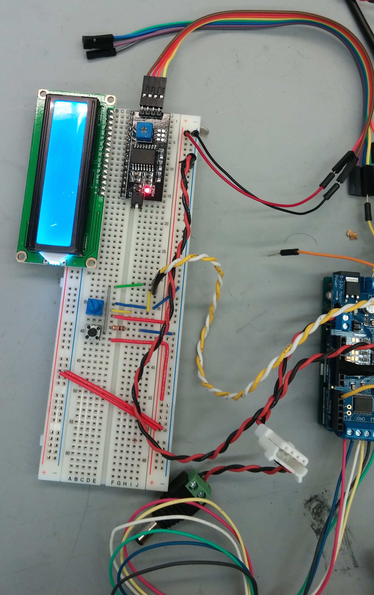

A statement about electrical + software.
October 25 2015
Sprint Goal: Create a working, integrated prototype that can cut and feed wire.
 For the electrical component of the first sprint, we wanted to figure out control of the the stepper motors and implement some input sensors that would control a parameter of the system (motor speed, feed time, etc.). We obtained a couple stepper motors from the mechanical stockrooom and an LCD from the electrical stockroom. To test the stepper motors, we measured the resistance between pairs of leads to determine the internal coil wiring. From this information, we could correctly wire the stepper motors to the Adafruit motor driver shield. For this sprint, we chose to use the Adafruit motor shield as a driver to simplify the interfacing between the stepper motors and the Arduino. Additionally, all of us have interacted with the motor shield in the previous lab and there are many available for us to use. Referencing the example code, we successfully implemented control of the stepper motors using the motor shield.
Since the motors were functioning properly we added two input sensors: a potentiometer and a button. The potentiometer reads a value between 1023. The value was then converted to a value corresponding to the number of holes on a breadboard one wished the length of wire to cross using simple math. By reading this value in the code, the user was able to choose a value for the length of the wire. The button used a debounce and an interrupt which we learned in Lab 1 to be read accurately. When the button was pressed, the value currently given by the potentiometer was selected as the length of the wire to be cut.
Having successsfully tested the stepper motors and sensors, we moved on to the LCD. One of our team members has a driver chip for the I2C LCD so we decided to use it to simply our work. After downloading the driver for the I2C from the internet, we went to work on the code. After testing several examples we couldnt get the LCD to work. The screen would light up but nothing would show up. After changing the code the screen wouldnt even light up. This issue was not fixed before the end of sprint one.
November 8 2015
Sprint Goal: Create a working, integrated wire feeding system.
Since the LCD was not working for the previous sprint, the first order of business was to get it functional. Since the driver chip from the last sprint didnt seem to be working, we removed it and hardwired the LCD to the Arduino. After hardwiring the LCD it worked, meaning either something was incorrect in our setup of the driver or the driver itself was malfunctioning. Since the driver chip is no longer present, we added a potentiometer to control the brightness of the screen on the LCD.
This sprint, we also ordered a more powerful stepper motor for the feeding mechanism and a driver capable of powering the new motor. After reading the documentation for the driver and the motor, we wired them together and to the Arduino. Once the stepper motor was functional using the provided sample code, we used the AccelStepper library to asynchronously control the position of the stepper motor. With some math, this library allows us to very easily feed a specified length of wire. Finally, we connected the enable pin of the driver to the Arduino, which allows us to disable the mostfets when the motor is not feeding. Disabling the mosfets removes the holding capabilities of the stepper motor, but puts significantly less strain on the motor driver.
November 20 2015
Sprint Goal: Create a working integrated product with the wire feeding and bending system.
For this sprint, we began working on a front-end application to interface with the wire bender. Chris worked on an interface in Python to send feeding and bending commands to the Arduino over serial, and Franton worked on reading serial input on the Arduino. Wilson soldered the circuit for the LCD display onto a protoboard so that all of our electrical components can work without a breadboard.
We acquired a more powerful and more accurate (0.9° per step) stepper motor for the bending mechanism. This motor was wired up the same way as the feeding motor, and was fairly easy to add in to the code using the AccelStepper library, due to its asynchronous functions. Upon testing, the bending stepper motor appeared to skip steps, even when not under load. Despite this slight lack in precision, the stepper motor was still able to bend the wire fairly predictably.
In this sprint, we ran out of time and did not manage to integrate all of the electrical and software parts together. Chris created two python programs, one with a user interface that could send bending and feeding commands over serial and another that would send commands from a correctly formatted .csv file. The Arduino received and performed bending and feeding commands from the built in serial monitor. The LCD driver board was finished, but we did not get a chance to test it.
At the end of this sprint, we achieved our minimum viable product of being able to feed and bend wire according to commands sent from a computer. Going into the next sprint, we plan to finish integration of the electrical and software components, and further calibrate and increase the precision of the system. If we make enough progress, we hope to make the system wireless by using an Arduino wifi sheild.
December 1 2015
Sprint Goal: Create our MVP by integrating software systems, refining mechanical systems, and moving electrical systems to protoboard
In this sprint we vastly improved on the interface between the computer and Arduino. In the previous sprint the GUI would show up on the screen but was actually non-functional. So for this sprint it was redesigned from the ground up using the python libraries Tkinter and pySerial. Tkinter was used to create the GIU itself, while pySerial connected to the Arduino through serial.
The interface had to be simple to use so that those not familiar with the project could still use it. Thus the interface includes text on how to operate it and was designed to have few, well labeled, buttons. To aid the user, the commands that have been entered are displayed on the right side of the GUI. The integration of the code on the Arduino with the python code using serial was time consuming because it required some unusual syntax as a result of the way the tkinter code interacted with the serial communications.
In order to make the interface work on different computers, a COM port selection dropdown menu was added to the GIU. This way when a new computer is used with the bender it isn’t a hassle to set up.
Due to the asynchronous nature of the AccelStepper library functions we call on the Arduino, using the serial as a buffer did not make sense. If all of the commands were sent to the Arduino initially, they would be all attempted to be executed simultaneously. Additionally, the Arduino Uno's serial buffer is only 64 bytes, which would limit our bend jobs to 16 commands, given 4 bytes per command. To overcome this issue, we set up a queue on the Arduino.
The Arduino code was restructured to have four main running states: ready, initializing, running, and ending. A queue of actions is also stored on the Arduino, where actions/commands consist of an action type (bend or feed) and an action amount. During the ready state, the Arduino waits for a "START" command over serial from the connected computer. Receiving this command advances the run state to initializing, where the Arduino prompts the computer for commands until the queue is full. Once the queue is full, the run state changes to running. In the running state, the Arduino executes commands in the queue, prompting for a new command when the currently executing command is completed. Once all of the commands in the bend job have been sent to the Arduino, the computer sends "END" over serial instead of another command, prompting the Arduino to enter the ending state. During the ending state, the remaining actions in the queue are executed, and the job is over when the all remaining actions have been completed.
Although this method of serial communication with an asynchronous queue is definitely not the easiest route, it allows for much more future expansion. Furthermore, there is technically no limit on the length of the bend job, assuming serial communication does not fail.
Finally, in addition to fully integrating the software and electrical components, some changes in stepper motor control were made to increase accuracy. Before each action, the relevant stepper motor is enabled, allowing it to lock back into physical step position before rotating the specified amount. This fixed the problem seen in the previous sprint, where the stepper motors appeared to skip steps even when under no load. Additionally, acceleration was employed for both the feeding and bending stepper motors to reduce the chance of slippage and step skipping.